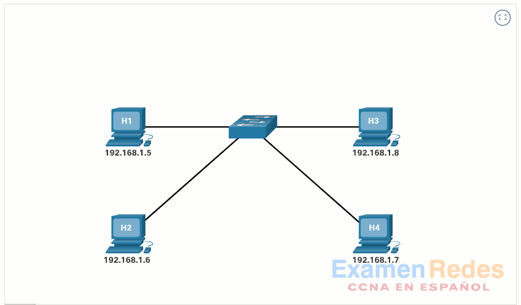

Address Resolution Protocol (ARP)
Especificación del RFC 826 y Mecanismos de Mapeo IP/MAC en Redes Ethernet
1. ¿Qué es el Protocolo ARP?
El Address Resolution Protocol (ARP) es un protocolo de red de capa de acceso a la red/enlace (Capa 2/3 en el modelo TCP/IP) responsable de asociar una dirección de capa de red lógica (dirección IP) con una dirección de capa de enlace física (dirección MAC) en redes de difusión como Ethernet.

2. ¿Por qué se inventó y cuál es el Rol de la NIC?
El protocolo IP opera a nivel lógico para resolver el enrutamiento a través de interredes complejas. Sin embargo, las Tarjetas de Interfaz de Red (NIC) en un segmento de red local no entienden direcciones IP; únicamente pueden transmitir y recibir tramas utilizando direcciones de hardware grabadas de fábrica (MAC / BIA).
ARP fue introducido para eliminar la necesidad de configurar manualmente las tablas de mapeo de hardware en cada host, proporcionando un mecanismo de descubrimiento dinámico, transparente y escalable para redes LAN.
Interacción con la NIC: La NIC funciona como un filtro físico de hardware. Solamente
pasa tramas a la CPU y al sistema operativo si la dirección MAC de destino de la trama coincide con su
propia MAC grabada, o si la trama está dirigida a la dirección de difusión de Capa 2
(FF:FF:FF:FF:FF:FF).

3. La Tabla ARP (Caché ARP)
Para evitar enviar una solicitud ARP por broadcast cada vez que se transmite un paquete, cada dispositivo de red mantiene una estructura de almacenamiento temporal en memoria RAM denominada Tabla ARP o Caché ARP.
Esta tabla asocia direcciones IP de la red local con las correspondientes direcciones físicas MAC de los dispositivos adyacentes.
- Entradas Dinámicas: Creadas automáticamente mediante solicitudes y respuestas ARP. Tienen un tiempo de vida (*TTL* / *timeout*) de unos pocos minutos (ej. 2 a 20 minutos según el SO). Si no hay tráfico con esa IP, la entrada expira y se elimina para liberar memoria.
- Entradas Estáticas: Asignadas manualmente por el administrador. Permanecen fijas en la tabla hasta que el sistema se reinicia o se eliminan explícitamente mediante comandos.
/* Representación Interna de la Caché ARP en Memoria RAM */
+------------------+-------------------+---------------+------------+
| Dirección IP | Dirección MAC | Tipo | TTL / Estado|
+------------------+-------------------+---------------+------------+
| 192.168.1.1 | 00-11-22-33-44-55 | Estática | Permanente |
| 192.168.1.20 | 00-11-22-AA-BB-CC | Dinámica | 240 seg |
| 192.168.1.30 | 3C-D9-2B-10-4F-A2 | Dinámica | 115 seg |
| 255.255.255.255 | FF-FF-FF-FF-FF-FF | Estática | Permanente |
+------------------+-------------------+---------------+------------+4. Comunicación entre Nodos (Flujo Paso a Paso)
Cuando el Host A (192.168.1.10) requiere transmitir datos al Host B (192.168.1.20) dentro de la misma subred:
- Búsqueda Local (Tabla ARP): Host A verifica su memoria caché ARP local buscando la IP destinataria para obtener su MAC.
- Generación del Broadcast (Host A / NIC Origen): Si la IP no está mapeada en la
tabla ARP, la tarjeta de red (NIC) del Host A construye la trama Ethernet estableciendo la dirección
MAC de destino en difusión (
FF:FF:FF:FF:FF:FF) y la transmite hacia el conmutador (switch). - Retransmisión por el Switch (Flooding): El switch recibe la trama, detecta la dirección de difusión y la retransmite por todos sus puertos activos dentro de la misma VLAN, excepto por el puerto de origen por donde llegó la solicitud.
- Procesamiento e Inspección en la NIC de los Nodos Destino: La NIC de cada equipo conectado acepta la trama al identificar la MAC de broadcast. La pasa al sistema operativo, pero solo el Host B (cuya IP coincide con la petición) procesa la solicitud; los demás equipos la descartan silenciosamente a nivel de pila IP.
- Respuesta Unicast (Host B): Host B responde directamente al Host A mediante un mensaje Unicast (con la MAC del Host A como destino explícito). El switch reenvía esta respuesta únicamente al puerto del Host A.
- Actualización de la Tabla ARP: Host A almacena la relación IP-MAC en su tabla ARP y transmite de inmediato la trama de datos IP que tenía retenida en buffer.
/* Detalle del Proceso de Difusión y Retorno en el Switch */
[PASO 1: ARP Request - BROADCAST]
Host A (NIC) ----> [Trama MAC Destino: FF:FF:FF:FF:FF:FF] ----> Switch
Switch ----> Retransmite a todos los puertos (excepto el de Host A)
├── Host B (192.168.1.20) -> ¡Coincide IP! Acepta y procesa.
└── Host C (192.168.1.30) -> No coincide IP. Descarta.
[PASO 2: ARP Reply - UNICAST]
Host B (NIC) ----> [Trama MAC Destino: 00:11:22:AA:BB:CC (Host A)] ----> Switch
Switch ----> Consulta tabla CAM y reenvía ÚNICAMENTE al puerto de Host A.
Host A ----> Recibe la MAC de B y actualiza su tabla ARP.5. Estructura del Petición/Respuesta (Campos ARP)
A continuación se muestra la estructura del encabezado ARP estandarizado (28 bytes para IPv4/Ethernet):
/* Estructura Trama ARP (RFC 826) */
+-----------------------------------+-----------------------------------+
| Hardware Type (HTYPE): 0x0001 | Protocol Type (PTYPE): 0x0800 |
+-----------------------------------+-----------------------------------+
| Hardware Length (HLEN): 6 | Protocol Length (PLEN): 4 |
+-----------------------------------+-----------------------------------+
| Operation Code (OPER): 1 (Req) / 2 (Reply) |
+-----------------------------------------------------------------------+
| Sender Hardware Address (SHA) - [MAC Origen: 6 Bytes] |
+-----------------------------------------------------------------------+
| Sender Protocol Address (SPA) - [IP Origen: 4 Bytes] |
+-----------------------------------------------------------------------+
| Target Hardware Address (THA) - [MAC Destino: 6 Bytes] |
+-----------------------------------------------------------------------+
| Target Protocol Address (TPA) - [IP Destino: 4 Bytes] |
+-----------------------------------------------------------------------+6. Variaciones del Protocolo ARP
- Gratuitous ARP (GARP): Petición/respuesta no solicitada. Utilizada para actualizar tablas ARP de los nodos tras un cambio de MAC (ej. Failover de clúster) y detectar direccionamiento IP duplicado en la red.
- Proxy ARP: Un router responde a solicitudes ARP destinadas a un host fuera de la red local, ofreciendo su propia MAC para interceptar y enrutar el tráfico.
- Reverse ARP (RARP): Obsoleto. Permitía a clientes sin disco solicitar su IP conociendo únicamente la MAC de su NIC (reemplazado por BOOTP y posteriormente DHCP).
7. Comandos de Inspección y Manipulación de la Tabla ARP
Bloques de código para auditar y modificar la tabla de vecinos ARP desde consola de comandos:
# Mostrar la tabla ARP dinámica y estática
arp -a
# Borrar la caché ARP (requiere privilegios de Administrador)
arp -d *
# Agregar una entrada estática en la tabla ARP (IP MAC)
netsh interface ip add neighbor "Ethernet" 192.168.1.1 00-11-22-33-44-55# Ver las entradas de vecinos de la tabla ARP
ip neighbor show
# Limpiar completamente la tabla ARP de la interfaz
sudo ip neigh flush dev eth0
# Añadir entrada estática en la tabla ARP
sudo ip neigh add 192.168.1.1 lladdr 00:11:22:33:44:55 dev eth08. Vulnerabilidades de Seguridad y Mitigación
Debido a que ARP es un protocolo sin estado ni mecanismo de autenticación nativo, es vulnerable a ataques de ARP Poisoning / ARP Spoofing, donde un atacante inyecta respuestas falsas para alterar las tablas ARP de las víctimas y posicionarse como un punto Man-In-The-Middle (MITM).
Mecanismos de protección estándares a nivel empresarial:
- Dynamic ARP Inspection (DAI): Función de switches administrables que contrasta los paquetes ARP contra la tabla de vinculación de DHCP Snooping.
- 802.1X: Control de acceso basado en puertos para impedir nodos no autorizados.
! Habilitar DHCP Snooping globalmente y en la VLAN
ip dhcp snooping
ip dhcp snooping vlan 10
# Habilitar Dynamic ARP Inspection en la VLAN 10
ip arp inspection vlan 10
! Configurar la interfaz del uplink hacia el router como confiable
interface GigabitEthernet0/1
ip arp inspection trust